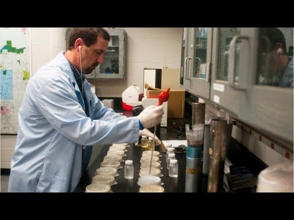

Natural Sciences Manager

What They Do: Plan, direct, or coordinate activities in fields such as life sciences, physical sciences, mathematics, statistics, and research and development.
On the Job You Would:
- Hire, supervise, or evaluate engineers, technicians, researchers, or other staff.
- Design or coordinate successive phases of problem analysis, solution proposals, or testing.
- Plan or direct research, development, or production activities.
Knowledge:
- Math and Science: biology, chemistry
- Business: management, administrative services
- Engineering and Technology: computers and electronics
Skills:
- Using scientific rules and strategies to solve problems
- Keeping track of progress for improvements
- Thinking about the pros and cons of different options
Economist
What They Do: Conduct research, prepare reports, or formulate plans to address economic problems related to the production and distribution of goods and services or monetary and fiscal policy.
On the Job You Would:
- Study economic and statistical data in area of specialization.
- Conduct research on economic issues and disseminate findings.
- Compile, analyze, and report data to explain economic phenomena and forecast market trends.
Knowledge:
- Math and Science: arithmetic, algebra, calculus, statistics
- Business: accounting, economics
- Engineering and Technology: computers and electronics
Skills:
- Reading work-related information
- Thinking about the pros and cons of different solutions
- Noticing problems and finding solutions
Urban & Regional Planner
What They Do: Develop comprehensive plans and programs for the use of land and physical facilities of jurisdictions, such as towns, cities, counties, and metropolitan areas.
On the Job You Would:
- Design, promote, or administer government plans or policies affecting land use, zoning, public utilities, community facilities, housing, or transportation.
- Advise planning officials on project feasibility, cost-effectiveness, or regulatory conformance.
- Create, prepare, or requisition graphic or narrative reports on land use data.
Knowledge:
- Safety and Government: law and government
- Arts and Humanities: English language
- Math and Science: geography, sociology, and anthropology
Skills:
- Listening to others and asking good questions
- Thinking about the pros and cons of different options
- Noticing problems and finding solutions